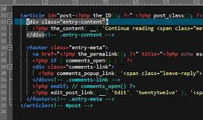
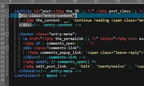

Web Geliştirme Yolculuğum
HTML5 öğrenmeye başladığımda semantik etiketlerin ne kadar önemli olduğunu fark ettim. Bu yazıda deneyimlerimi paylaşıyorum.
HTML5 öğrenmeye başladığımda semantik etiketlerin ne kadar önemli olduğunu fark ettim. Bu yazıda deneyimlerimi paylaşıyorum.
GitHub üzerinde proje paylaşmak, bir yazılımcı için en büyük gelişim araçlarından biridir.